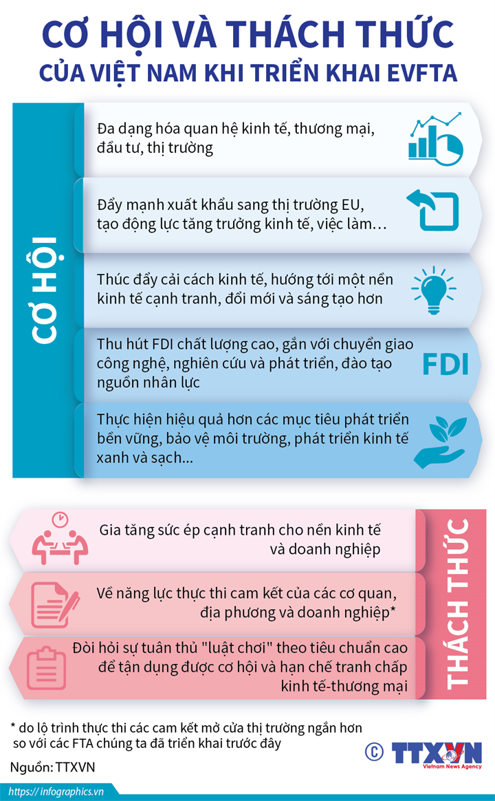
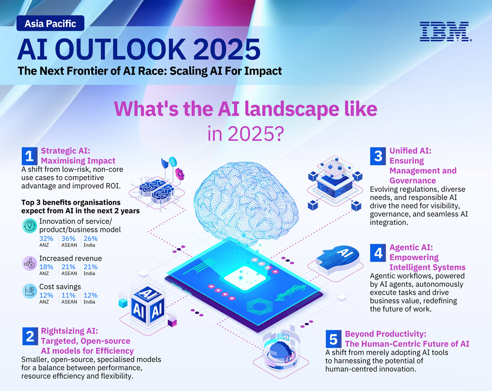

BÀI 1: GIỚI THIỆU VỀ TRÍ TUỆ NHÂN TẠO (AI)
1. Khái niệm trí tuệ nhân tạo (AI)
a. Trí tuệ nhân tạo là gì?
• Trí tuệ nhân tạo (Artificial Intelligence – AI) là lĩnh vực khoa học máy tính nghiên cứu và phát triển các hệ thống có khả năng thực hiện các công việc đòi hỏi trí thông minh của con người như học tập, suy luận, nhận thức, hiểu ngôn ngữ tự nhiên và xử lý hình ảnh.
• AI giúp máy tính có thể “tự học” từ dữ liệu để đưa ra quyết định mà không cần được lập trình chi tiết cho từng tình huống.
👉 Ví dụ:
• Ứng dụng dịch tự động, trợ lý ảo như Siri, ChatGPT, Google Assistant,... đều sử dụng AI.
b. Mục tiêu của AI
• Tạo ra các hệ thống có khả năng học hỏi, suy nghĩ, đưa ra quyết định giống con người.
• Giúp tự động hóa các công việc phức tạp, giảm sai sót, tăng hiệu quả lao động.
2. Phân biệt AI với chương trình thông thường
• Chương trình thông thường hoạt động theo các lệnh cố định, chỉ thực hiện được những gì người lập trình quy định sẵn.
• AI có khả năng tự học và thích nghi với dữ liệu mới, từ đó đưa ra quyết định mà không cần được hướng dẫn cụ thể trước.
👉 Ví dụ:
• Một phần mềm tra cứu chỉ trả về kết quả cố định khi gõ từ khóa.
• Trong khi đó, ChatGPT có thể hiểu câu hỏi và tạo ra câu trả lời tự nhiên nhờ khả năng học ngôn ngữ.
3. Ứng dụng của AI trong đời sống
• AI được ứng dụng trong nhiều lĩnh vực của đời sống:
| Lĩnh vực | Ví dụ ứng dụng |
|---|---|
| 📱 Trợ lý ảo | Siri, Google Assistant, ChatGPT |
| 🚗 Giao thông | Xe tự hành, nhận dạng biển báo |
| 🏥 Y tế | Hỗ trợ chẩn đoán hình ảnh, phân tích bệnh án |
| 🏫 Giáo dục | Hệ thống học tập cá nhân hóa, chấm điểm tự động |
| 🛍️ Thương mại điện tử | Gợi ý sản phẩm, dự đoán nhu cầu khách hàng |

4. Cơ hội và thách thức của AI
a. Cơ hội
• Tăng năng suất lao động, giảm chi phí sản xuất.
• Tạo ra sản phẩm, dịch vụ mới và mở ra các ngành nghề sáng tạo.
• Hỗ trợ con người ra quyết định nhanh và chính xác hơn.
b. Thách thức
• Gây mất việc làm do tự động hóa.
• Vấn đề đạo đức và quyền riêng tư khi AI xử lý dữ liệu cá nhân.
• Nguy cơ sai lệch nếu dữ liệu huấn luyện không chính xác.

5. Tương lai của AI
• AI sẽ ngày càng được tích hợp vào mọi lĩnh vực của đời sống như y học, giáo dục, năng lượng, sáng tạo nội dung.
• Con người cần phát triển AI một cách có trách nhiệm để đảm bảo lợi ích chung cho xã hội.

🎧 Âm thanh minh họa
🎥 Video tham khảo
🧩 Tóm tắt ghi nhớ
| Nội dung | Ý chính |
|---|---|
| Khái niệm AI | Máy tính mô phỏng khả năng tư duy, học hỏi của con người |
| Phân biệt | AI có thể học và thích nghi; chương trình thường chỉ làm theo lệnh |
| Ứng dụng | Trợ lý ảo, xe tự hành, giáo dục, y tế, thương mại |
| Cơ hội | Tăng hiệu suất, mở rộng lĩnh vực sáng tạo |
| Thách thức | Đạo đức, quyền riêng tư, việc làm |